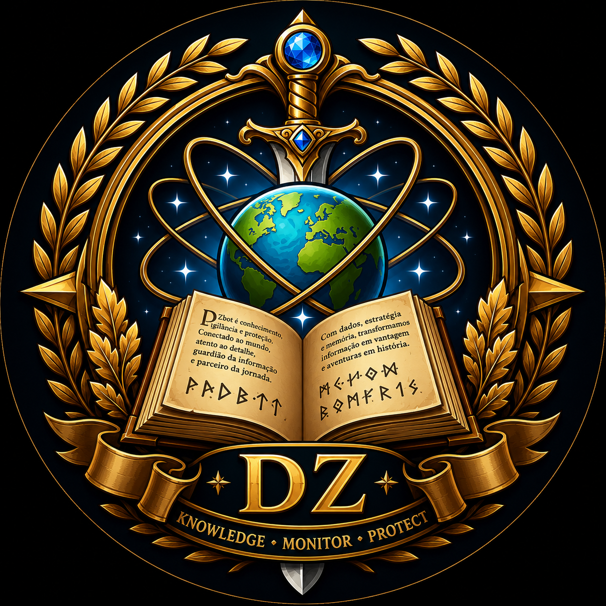

100% pensado para Discord
Comandos, alertas, rankings, dashboards e inteligência entregues onde sua guild já conversa e toma decisões.
O DZbot monitora personagens, guilds, mortes, níveis, bosses, bazaar, rankings e sinais estratégicos — com alertas e dados organizados diretamente no Discord.

Comandos, alertas, rankings, dashboards e inteligência entregues onde sua guild já conversa e toma decisões.
Depois de configurado, o DZbot acompanha continuamente os alvos e transforma mudanças em informação útil.
Canais, configurações, listas e recursos ficam separados por servidor, preservando organização e privacidade operacional.
Estrutura de canais, perfil visual, recursos habilitados e experiência podem ser adaptados à identidade de cada comunidade.
Histórico, tendências, janelas de boss e inteligência de personagens ajudam a enxergar o que merece atenção antes do resto.
O DZbot é configurado para o servidor do cliente com estrutura pronta, reduzindo trabalho manual da administração.
Os módulos podem ser combinados conforme a necessidade da guild. A composição final é definida por orçamento.
Acompanhamento de personagens com status, nível, vocação, guild e histórico de mudanças.
Classifique personagens estratégicos e acompanhe movimentações relevantes sem perder contexto.
Adicione e acompanhe grupos inteiros para uma visão operacional ampla da guild ou de alvos monitorados.
Registro e alertas de mortes, avanços de nível e outras mudanças importantes nos personagens acompanhados.
Consolida sinais e histórico de personagens para acelerar análise, acompanhamento e tomada de decisão.
Recursos voltados para operação coordenada, leitura de cenário e acompanhamento de alvos em situações competitivas.
Sinais coletivos e acompanhamento de eventos que ajudam a identificar padrões relevantes para a operação.
Rankings, relatórios e visões consolidadas para transformar atividade do servidor em leitura rápida e comparável.
Histórico e janelas prováveis de bosses relevantes, com classificação de atenção para ajudar sua guild a priorizar o momento certo.
Canal dedicado para sinais, acompanhamento e alertas de bosses configurados para a operação da guild.
Acompanhamento de mecânicas e eventos relevantes do mundo, centralizando informação útil no Discord.
Leitura de leilões do Character Bazaar com filtros por vocação, nível, valor, tempo restante e critérios de interesse.
Consulta e acompanhamento de skills com leitura por vocação e contexto para comparação de personagens.
Ferramentas de interação, consulta e utilidades que ajudam a transformar o bot em parte ativa da comunidade.
Suporte a organização e acompanhamento de atividades do time dentro da estrutura do servidor.
Recursos administrativos e visões executivas para manter o ambiente claro, organizado e adaptado à guild.
O cliente adiciona o DZbot ao servidor, a estrutura é configurada e os módulos contratados passam a trabalhar de forma integrada ao Discord.
Falar sobre implantação →Objetivos, tamanho, foco PvE/PvP, necessidades de monitoramento e módulos desejados.
Canais, permissões, identidade e recursos ficam preparados para aquele servidor.
Tracker, radar, bosses, rankings, bazaar e demais recursos entram em operação.
Dados e mudanças são coletados, organizados e entregues à comunidade no Discord.
Menos abas abertas, menos consulta manual e mais contexto para agir. O DZbot concentra sinais relevantes no lugar onde sua equipe já está.
⚡ Radar atualizado
3 personagens estratégicos online.
⚔️ Boss Intelligence
Janela relevante detectada. Atenção recomendada.
📈 Level Up
Personagem monitorado avançou de nível.
Sim. A experiência foi desenhada para o Discord: comandos, canais, alertas, rankings e informações operacionais são apresentados no servidor da comunidade.
Não. A configuração pode variar por servidor, incluindo canais, módulos habilitados e identidade visual. O orçamento acompanha essa composição.
Os módulos de monitoramento trabalham de forma automatizada após a configuração. Os comandos servem principalmente para consultar, administrar ou definir o que deve ser acompanhado.
Não trabalhamos com uma tabela pública fixa. Cada comunidade recebe uma proposta de acordo com os módulos, escopo e nível de personalização desejados.
Sim. A arquitetura modular permite começar com um conjunto de recursos e evoluir conforme a necessidade da guild.
Conte rapidamente sobre sua guild e os recursos que mais interessam. A proposta é montada de acordo com o seu cenário — sem preço genérico e sem pacote engessado.